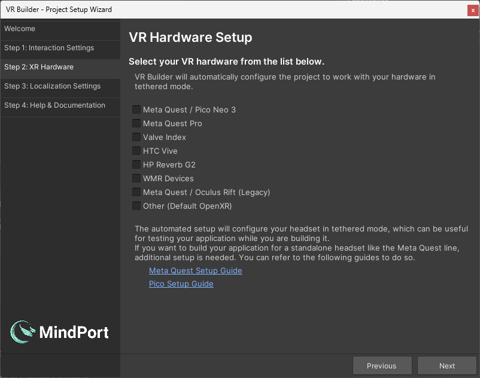
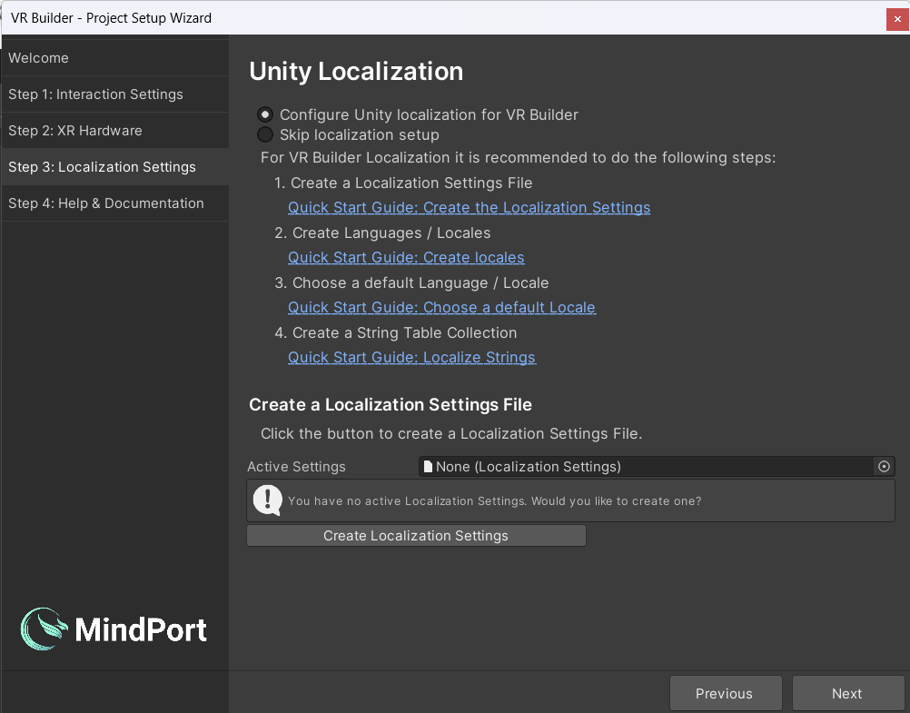
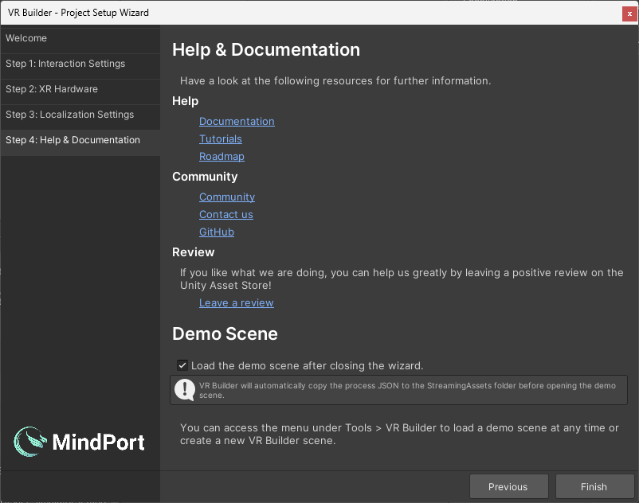

Installation
You can get VR Builder from the Unity Asset Store or from our GitHub. In the first case, you will download and import the VR Builder package from the Package Manager. From GitHub, you can either download a released .UnityPackage or pull the repository and import the
package.json file in the Package Manager.
If you are creating a new project, select Universal 3D template. Note that it is not necessary to choose the VR template as VR Builder will configure the project for VR automatically.
After importing, VR Builder will compile and import some dependencies, then the Project Setup Wizard will appear.
Guide Through the Project Setup Wizard
The Setup Wizard helps to get new or existing Unity scenes set up and ready to be used with VR Builder.
Welcome
In the following we will guide you through the different tabs of the VR Builder Setup Wizard.
Click Next to proceed to the interaction settings page setup page.

Interaction Settings
Here you can configure some default settings related to VR Builder interactions. Right now, the only available setting will determine whether a newly created grabbable object will use physics or not. You can also change these options at any time in Project Settings > VR Builder > Settings.

XR Hardware Setup
Then, if it's not configured already, you will be able to configure your project to work with your VR hardware. If your hardware is not listed but supports OpenXR, select Other. You might need to finish the configuration under Project Settings -> XR Plug-in Management. If your device is not supported, please reach out to us in the VR Builder Community. The packages for the selected hardware will be imported after closing the wizard.

Unity Localization
Finally you must choose whether to set up localization support or skip it for now. VR Builder supports localization through the Unity Localization package. When setting up localization, the wizard will guide you through the manual steps required for a localized project. It provides a useful checklist and some shortcuts to make the task easier. It also has links that redirect to the relevant Unity documentation. If you decide to skip this setup, VR Builder will work in a single language. You can perform localization setup at any time. We encourage you to use Unity Localization, even if you use just one language. With Unity Localization, you will have all your texts in one place inside the Unity Localization Tables, which in turn will give you the possibility to export and refine them and import them back into Unity. Note that as of January 2024, we do not support asset localization tables. See Resources path/Key for Play Audio Files in the Documentation on how to localize audio files.

Help & Documentation
This page lists some useful resources to get you started with VR Builder. There is also a checkbox which lets you choose if the demo scene should be loaded after closing the wizard.After clicking Finish, VR Builder is set up! You will need to wait a few seconds for packages to import if you selected a headset from the hardware list. Then, feel free to try out the demo scene or create your own scene by selecting Tools > VR Builder > Scene Setup Wizard….
If the demo scene or any other asset looks solid magenta there is an issue with the shader of the material. The Demo Scenes in VR Builder use the Universal Render Pipeline (URP). If the project uses a different render pipeline, they will not display properly.
